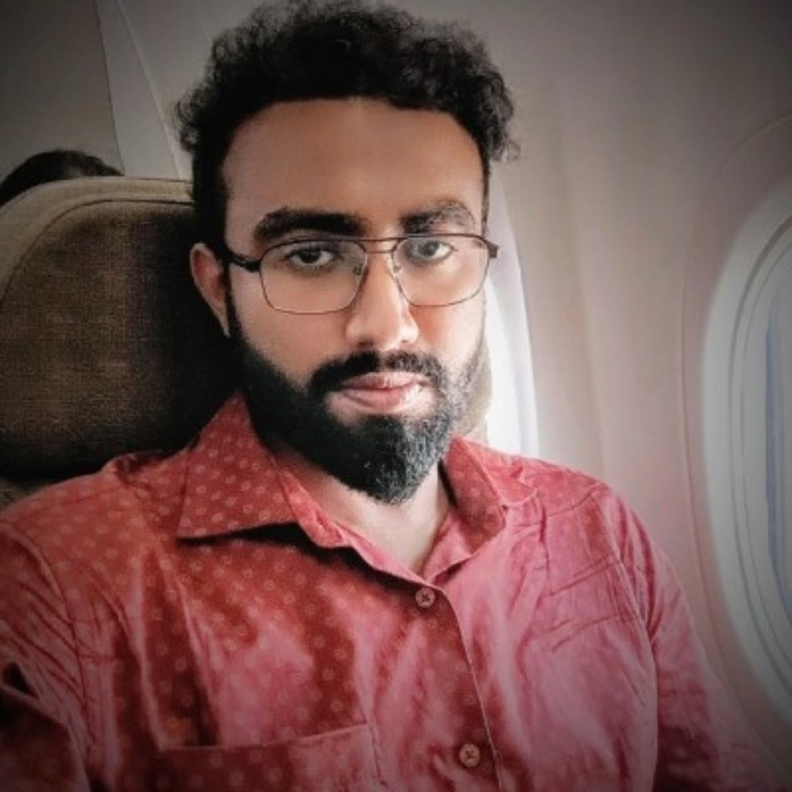

MTech (Research),Department of Computer Science & Automation(CSA),IISc Bangalore
I am an MTech (Research) student at the Department of Computer Science & Automation(CSA),IISc Bangalore working on theoretical Reinforcement Learning, including offline RL,regret analysis & sample complexity. I am also interested in LLM alignment and RLHF.And more recently,GenAI.
Working in Statistics and Machine Learning.
Responsibilities: Conducting tutorials, invigilation, preparing assignments and exam papers.
Worked at Centre for Neuroscience (CNS), IISc.
NLP-based system for semantic code retrieval and intelligent search.
AI assistant integrating multiple modalities for enhanced interaction and task execution.
Intelligent recommendation engine using machine learning techniques.
Real-time train tracking and localization system.
Sample Efficient Active Algorithms for Offline Reinforcement Learning
[PDF]
Institutional Email: rsoumyadeep@iisc.ac.in
Personal Email: soumyadeeproy0162@gmail.com
Location: Bangalore, India